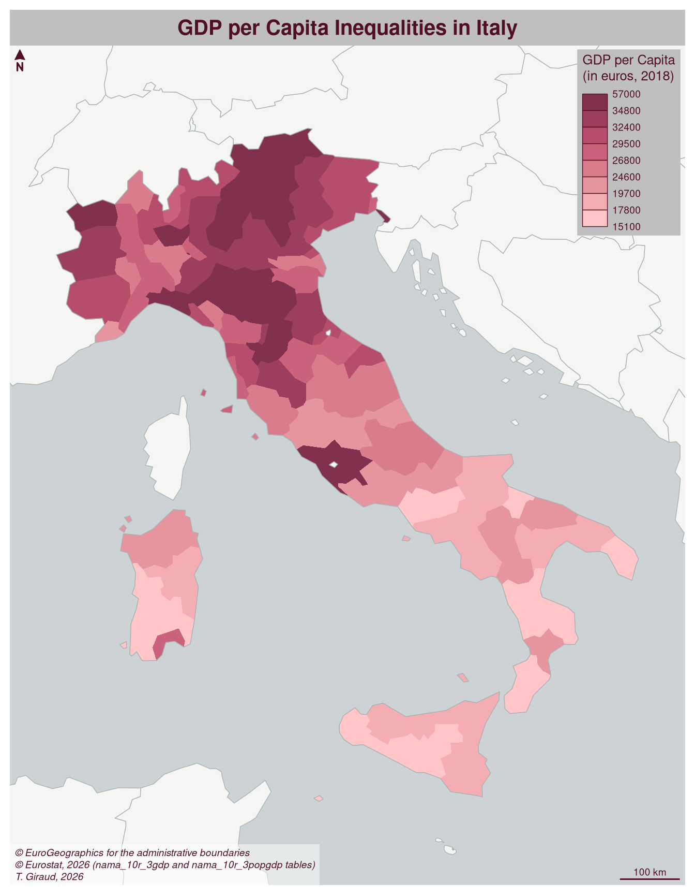
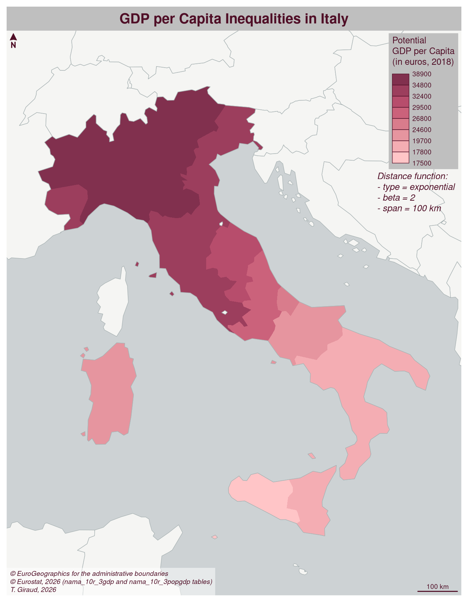
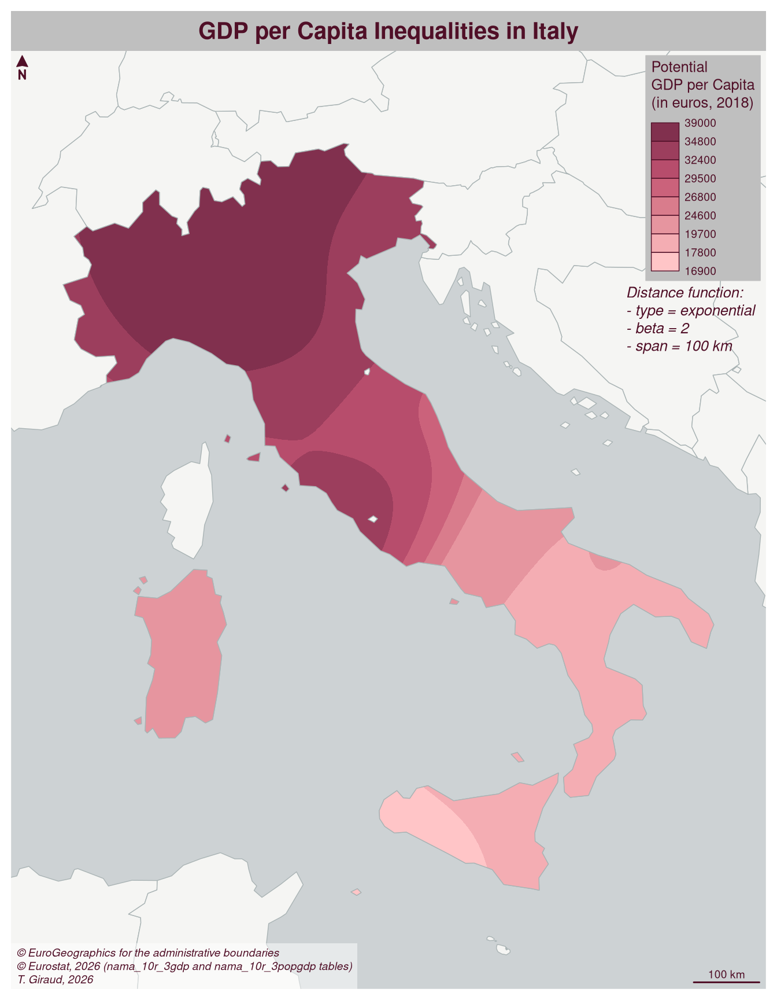

The Stewart model is a spatial interaction modeling approach which aims to compute indicators based on stock values weighted by distance. These indicators have two main interests:
- they produce understandable maps by smoothing complex spatial patterns;
- they enrich stock variables with contextual spatial information.
This functional semantic simplification may help to show a smoothed context-aware picture of the localized socio-economic activities.
In this vignette, we show a use case of these potentials on the regional GDP per capita in Italy with three maps:
- a regional map of the GDP per capita;
- a regional map of the potential GDP per capita;
- a smoothed map of the GDP per capita.
Data preparation
library(eurostat)
library(giscoR)
library(potential)
library(mapsf)
library(sf)
# Data download from Eurostat
gdp_raw <- get_eurostat('nama_10r_3gdp')
#> indexed 0B in 0s, 0B/sindexed 1.00TB in 0s, 101.64TB/s
pop_raw <- get_eurostat('nama_10r_3popgdp')
#> indexed 0B in 0s, 0B/sindexed 1.00TB in 0s, 306.38TB/s
# Selection of the relevant rows and columns
pop <- pop_raw[nchar(pop_raw$geo)==5 &
pop_raw$TIME_PERIOD == "2018-01-01", ]
names(pop)[5] <- "pop"
pop$pop <- pop$pop * 1000
gdp <- gdp_raw[nchar(gdp_raw$geo)==5 &
gdp_raw$TIME_PERIOD == "2018-01-01" &
gdp_raw$unit == "MIO_EUR", ]
names(gdp)[5] <- "gdp"
gdp$gdp <- gdp$gdp * 1000000
# Base maps download from GISCO
countries <- gisco_get_countries()
nuts_raw <- gisco_nuts_2024
nuts <- nuts_raw[nuts_raw$LEVL_CODE == 3 &
nuts_raw$CNTR_CODE == "IT", ]
nuts <- st_transform(nuts, 3035)
countries <- st_transform(countries, 3035)
country <- countries[countries$ISO3_CODE == "ITA", ]
# Join between base map and dataset
nuts <- merge(nuts, pop[,c("geo", "pop")], by.x = "NUTS_ID", by.y = "geo", all.x = T)
nuts <- merge(nuts, gdp[,c("geo", "gdp")], by.x = "NUTS_ID", by.y = "geo", all.x = T)Regional Map of the GDP per Capita
# Compute the GDP per capita
nuts$gdp_hab <- nuts$gdp / nuts$pop
# Set Breaks
bv <- quantile(nuts$gdp_hab, seq(from = 0, to = 1, length.out = 9), na.rm = T)
# Set a color palette
pal <- mf_get_pal(n = 9, palette = "Burg", rev = TRUE)
# Set the credit text
cred <- paste0("© EuroGeographics for the administrative boundaries\n",
"© Eurostat, 2026 (nama_10r_3gdp and nama_10r_3popgdp tables)\n",
"T. Giraud, 2026")
# Set a theme
mf_theme(title_banner = TRUE)
# Draw the basemap
mf_map(x = countries, extent = country,
col = "#f5f5f3ff", border = "#a9b3b4ff", bg = "#cdd2d4")
# Map the regional GDP per capita
mf_map(x = nuts, var = "gdp_hab", type = "choro",
leg_pos = "topright",
breaks = bv,
pal = pal,
border = NA,
leg_frame = TRUE,
leg_title = "GDP per Capita\n(in euros, 2018)",
leg_val_rnd = -2,
col_na = "grey60",
add = TRUE)
mf_map(country, col = NA, border = "#a9b3b4ff", add = TRUE)
# Set a layout
mf_arrow("topleft")
mf_title(txt = "GDP per Capita Inequalities in Italy")
mf_scale(100)
mf_credits(txt = cred, bg = "#ffffff80")
Regional Map of the Potential GDP per Capita
We compute the potentials of GDP for each spatial unit. The computed value takes into account the spatial distribution of the stock variable and return a sum weighted by distance, according a specific spatial interaction and fully customizable function.
# Create a distance matrix between units
nuts_pt <- nuts
st_geometry(nuts_pt) <- st_centroid(st_geometry(nuts_pt))
d <- create_matrix(nuts_pt, nuts_pt)
# Compute the potentials of population and GDP per units
# function = exponential, beta = 2, span = 100 km
pot <- potential(x = nuts_pt,
y = nuts_pt,
d = d,
var = c("pop", "gdp"),
fun = "e",
beta = 2,
span = 100000)
# Compute the potential GDP per capita
nuts$gdp_hab_pot <- pot[, 2] / pot[, 1]
# Exclude regions with No Data
nuts$gdp_hab_pot[is.na(nuts$gdp_hab)] <- NA
# Set breaks
bv2 <- c(min(nuts$gdp_hab_pot, na.rm = TRUE),
bv[2:8],
max(nuts$gdp_hab_pot, na.rm = TRUE))
# Draw the basemap
mf_map(x = countries, extent = country,
col = "#f5f5f3ff", border = "#a9b3b4ff", bg = "#cdd2d4")
# Map the regional GDP per capita
mf_map(x = nuts, var = "gdp_hab_pot", type = "choro",
leg_pos = "topright",
breaks = bv2,
pal = pal,
border = NA,
leg_title = "Potential\nGDP per Capita\n(in euros, 2018)",
leg_frame = TRUE,
leg_val_rnd = -2,
col_na = "grey60",
add = TRUE)
mf_map(country, col = NA, border = "#a9b3b4ff", add = TRUE)
# Set a layout
mf_arrow("topleft")
mf_title(txt = "GDP per Capita Inequalities in Italy")
mf_scale(100)
mf_credits(txt = cred, bg = "#ffffff80")
# Set a text to explicit the function parameters
mf_text(x = c(5118878, 2455547), align = "left",
cex = 0.8, font = 3, pos = "bottomleft",
txt = paste0("Distance function:\n",
"- type = exponential\n",
"- beta = 2\n",
"- span = 100 km")
)
This map gives a smoothed picture of the spatial patterns of GDP per capita in Italy while keeping the original spatial units as interpretive framework. Hence, the map reader can still rely on a known territorial division to develop its analyses.
Smoothed Map of the GDP per Capita
In this case, the potential GDP per capita is computed on a regular grid.
# Compute the potentials of population on a regular grid (10km resolution)
g <- create_grid(x = nuts, res = 10000)
d <- create_matrix(nuts_pt, g)
# function = exponential, beta = 2, span = 75 km
pot2 <- potential(x = nuts_pt,
y = g,
d = d,
var = c("pop", "gdp"),
fun = "e",
beta = 2,
span = 100000)
# Create the ratio variable
g$gdp_hab_pot <- pot2[, 2] / pot2[, 1]
# Set breaks
bv3 <- c(min(g$gdp_hab_pot, na.rm = TRUE),
bv[2:8],
max(g$gdp_hab_pot, na.rm = TRUE))
# Create an isopleth layer
equipot <- equipotential(x = g, var = "gdp_hab_pot", breaks = bv3,
mask = nuts[!is.na(nuts$gdp_hab),])
# Draw the basemap
mf_map(x = countries, extent = country,
col = "#f5f5f3ff", border = "#a9b3b4ff", bg = "#cdd2d4")
# Map the regional GDP per capita
mf_map(x = equipot, var = "min", type = "choro",
leg_pos = "topright",
breaks = bv3,
pal = pal,
border = NA,
leg_title = "Potential\nGDP per Capita\n(in euros, 2018)",
leg_frame = TRUE,
leg_val_rnd = -2,
add = TRUE)
mf_map(country, col = NA, border = "#a9b3b4ff", add = TRUE)
# Set a layout
mf_arrow("topleft")
mf_title(txt = "GDP per Capita Inequalities in Italy")
mf_scale(100)
mf_credits(txt = cred, bg = "#ffffff80")
# Set a text to explicit the function parameters
mf_text(x = c(5118878, 2455547), align = "left",
cex = 0.8, font = 3, pos = "bottomleft",
txt = paste0("Distance function:\n",
"- type = exponential\n",
"- beta = 2\n",
"- span = 100 km")
)
Unlike the previous maps, this one doesn’t keep the initial territorial division to give a smoothed picture of the spatial patterns of GDP per capita in Italy. The result is easy to read and can be considered as a bypassing of the Modifiable Areal Unit Problem (MAUP).